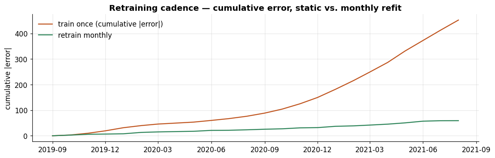
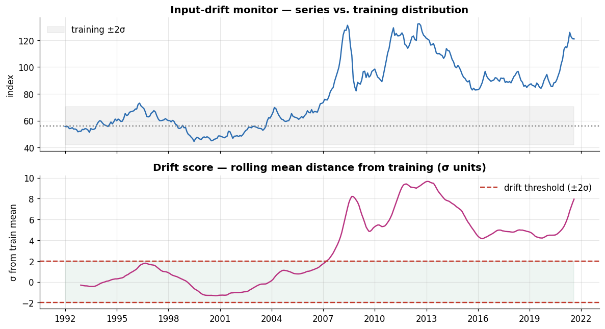

Series:Time Series Analysis in Python — from Statistical Modeling to Machine Learning
The finale. A forecast that lives only in a notebook helps no one — Part 12 turns models into a system: reproducible pipelines, persistence, retraining, drift monitoring, and serving. Then the capstone puts the whole series to work: a rigorous head-to-head of a statistical, a machine-learning, and a deep-learning model on one dataset, under the Part 6 backtesting discipline, reported with proper metrics and calibrated intervals — followed by a decision guide distilling all twelve parts into “which model, when.”
What you will learn
Reproducible pipelines & persistence (joblib)
Retraining cadence — when and how often to refit
Monitoring input drift and forecast degradation
Serving — batch vs. API, and a dashboard
Capstone — statistical vs. ML vs. deep, backtested, with conformal intervals
A decision guide and a retrospective of the journey
Dataset
monthly_price.csv one last time — the Food Price Index.
Train a model on history, in a reproducible pipeline.
Persist it (weights + preprocessing + config) so it can be reloaded exactly.
Serve forecasts (batch job or API).
Monitor inputs for drift and forecasts for degradation.
Retrain on a schedule or when monitoring trips a trigger — back to step 1.
Everything below builds one turn of that loop. The modelling is the easy part; the discipline around it is what makes a forecast trustworthy over time.
2. Reproducible pipelines & persistence
A deployable forecaster is one object that carries its preprocessing and its model, so training and serving apply identical steps. We wrap ours as a small class, then persist it with joblib and prove the reloaded copy forecasts identically.
class ForecastPipeline:# Bundles preprocessing + model as one persistable object.def__init__(self, config):self.config = configself.model_ =Nonedef fit(self, series):self.model_ = ETSModel(series, **self.config, initialization_method="estimated").fit(disp=False)self.train_end_ = series.index[-1]returnselfdef predict(self, h):returnself.model_.forecast(h)pipe = ForecastPipeline(dict(error="mul", trend="add", damped_trend=True)).fit(y.iloc[:-H])# persist and reloadjoblib.dump(pipe, "forecast_pipeline.joblib")reloaded = joblib.load("forecast_pipeline.joblib")same = np.allclose(pipe.predict(H).values, reloaded.predict(H).values)print(f"saved forecast_pipeline.joblib ({os.path.getsize('forecast_pipeline.joblib')/1024:.0f} KB)")print(f"reloaded pipeline forecasts identically: {same}")print(f"model was trained through: {reloaded.train_end_.date()}")
saved forecast_pipeline.joblib (77 KB)
reloaded pipeline forecasts identically: True
model was trained through: 2019-08-01
The reloaded object reproduces the forecast to the bit. Two reproducibility rules that save real pain later: pin versions (a requirements.txt with exact package versions — models can change behaviour across releases) and fix seeds for any stochastic step (Parts 9–10). A persisted model without its environment and config is not actually reproducible.
3. Retraining cadence
Models go stale as new data arrives and the world shifts. How often to retrain is a real decision. We compare two policies over the last two years, one step at a time: train once (fit at the start, never update) vs. retrain monthly (refit as each new actual arrives).
window =24static_model = ETSModel(y.iloc[:-window], error="mul", trend="add", damped_trend=True, initialization_method="estimated").fit(disp=False)static_err, retrain_err = [], []for i inrange(window): t =len(y) - window + i actual = y.iloc[t] static_pred = static_model.forecast(i +1).iloc[-1] # frozen model, i+1 steps out rm = ETSModel(y.iloc[:t], error="mul", trend="add", damped_trend=True, initialization_method="estimated").fit(disp=False) retrain_pred = rm.forecast(1).iloc[0] # refit on all data up to t-1 static_err.append(abs(actual - static_pred)) retrain_err.append(abs(actual - retrain_pred))print(f"mean |error| — train once: {np.mean(static_err):.2f} | "f"retrain monthly: {np.mean(retrain_err):.2f}")fig, ax = plt.subplots(figsize=(11, 3.6))idx = y.index[-window:]ax.plot(idx, np.cumsum(static_err), color=PALETTE[1], label="train once (cumulative |error|)")ax.plot(idx, np.cumsum(retrain_err), color=PALETTE[2], label="retrain monthly")ax.set_title("Retraining cadence — cumulative error, static vs. monthly refit")ax.set_ylabel("cumulative |error|"); ax.legend(frameon=False)ax.xaxis.set_major_locator(mdates.MonthLocator(interval=3))ax.xaxis.set_major_formatter(mdates.DateFormatter("%Y-%m"))plt.tight_layout(); plt.show()
mean |error| — train once: 18.83 | retrain monthly: 2.46

The difference is stark (mean |error| 18.83 vs 2.46), and the reason is instructive: the frozen model can only forecast from its stale training end, so as months pass it is effectively making an ever-longer-horizon call (by the end, a two-year-ahead one), while monthly retraining always lets you make a fresh, short-horizon forecast on the newest data. The gap widens most through the 2020–21 shift, when the frozen model is furthest out of date. The trade-off is cost and stability: refit too often and you pay compute and risk jumpy forecasts; too rarely and you drift. The pragmatic answer is usually scheduled retraining (monthly/quarterly) plus triggered retraining when monitoring fires — Section 4.
4. Monitoring drift & degradation
Two things to watch in production:
Data (input) drift — the incoming data’s distribution shifts away from what the model trained on. Detect by comparing a recent window’s statistics to the training reference (here, a rolling mean vs. training mean in σ units; formal options include the KS test and Population Stability Index).
Forecast degradation — the error creeps up over time. Track a rolling forecast error and alert when it breaches a threshold.
Both are early-warning signals that it’s time to retrain (or investigate).
ref = y.iloc[:120] # early training window: first 10 years (calm 1990s)ref_mu, ref_sd = ref.mean(), ref.std()roll_mu = y.rolling(12).mean()drift_score = (roll_mu - ref_mu) / ref_sd # 12-mo mean distance from training mean, in σfig, axes = plt.subplots(2, 1, figsize=(11, 6), sharex=True)axes[0].plot(y.index, y, color=PALETTE[0]); axes[0].axhline(ref_mu, color="grey", ls=":")axes[0].fill_between(y.index, ref_mu-2*ref_sd, ref_mu+2*ref_sd, color="grey", alpha=0.1, label="training ±2σ")axes[0].set_title("Input-drift monitor — series vs. training distribution")axes[0].set_ylabel("index"); axes[0].legend(frameon=False)axes[1].plot(drift_score.index, drift_score, color=PALETTE[4])axes[1].axhline(2, color="#c0392b", ls="--", label="drift threshold (±2σ)")axes[1].axhline(-2, color="#c0392b", ls="--")axes[1].fill_between(drift_score.index, -2, 2, color=PALETTE[2], alpha=0.08)axes[1].set_title("Drift score — rolling mean distance from training (σ units)")axes[1].set_ylabel("σ from train mean"); axes[1].legend(frameon=False)axes[1].xaxis.set_major_locator(mdates.YearLocator(3))plt.tight_layout(); plt.show()breaches = drift_score[np.abs(drift_score) >2]print(f"drift threshold breached in {len(breaches)} months; "f"first at {breaches.index[0].strftime('%Y-%m') iflen(breaches) else'never'}, "f"most recent {breaches.index[-1].strftime('%Y-%m') iflen(breaches) else'—'}")

drift threshold breached in 173 months; first at 2007-04, most recent 2021-08
The drift score breaks through +2σ in 2007 and stays elevated for the rest of the record — the entire post-2007 commodity era is a different regime from the calm 1990s baseline the model trained on. A monitor watching this would have flagged “the world changed, check your model” at the 2007 onset and kept flagging through 2020–21. Pair this input monitor with a forecast-error monitor (rolling RMSE/MASE), and connect either trigger to the retraining loop. This is also where change-point and anomaly detection from Part 11 earn their keep as production alarms.
5. Serving forecasts
Two delivery modes:
Batch — a scheduled job loads the persisted model, forecasts, and writes results to a table/file/warehouse. Simple, robust, the right default for most periodic forecasts.
Real-time API — a service loads the model once and returns forecasts on request. Use when forecasts are needed on-demand or per-entity.
Both just load the persisted pipeline from Section 2. Reference implementations (not executed here):
The through-line: the fitted pipeline is the deployable artifact. Train it reproducibly, persist it, and every serving mode is a thin wrapper that loads it.
6. Capstone — statistical vs. ML vs. deep, done right
The synthesis. We pit one model from each family against each other on the Food Price Index, using everything the series taught us:
Statistical: damped ETS (Part 3).
Machine learning: recursive LightGBM (Part 8).
Deep learning: an LSTM (Part 9).
We evaluate with walk-forward cross-validation (Part 6) reporting MASE, then attach conformal prediction intervals — a model-agnostic way to turn any point forecaster’s backtest errors into calibrated bands — and check coverage.
# walk-forward backtest: MASE + per-horizon errors (reused for conformal intervals)ytr = y.iloc[:-H] # calibration/backtest set — final H months held out entirelytscv = TimeSeriesSplit(n_splits=5, test_size=12)mase_scores = {m: [] for m in MODELS}horizon_errs = {m: [] for m in MODELS} # reused for leak-free conformal intervalsfor tri, tei in tscv.split(ytr): tr, te = ytr.iloc[tri], ytr.iloc[tei]for name, fn in MODELS.items(): fc = fn(tr, 12) mase_scores[name].append(mase(te.values, fc, tr)) horizon_errs[name].append(np.abs(te.values - fc))board = pd.DataFrame({"model": list(MODELS),"CV MASE": [round(np.mean(mase_scores[m]), 3) for m in MODELS],"MASE std": [round(np.std(mase_scores[m]), 3) for m in MODELS]} ).sort_values("CV MASE").reset_index(drop=True)board
model
CV MASE
MASE std
0
ETS (statistical)
0.513
0.292
1
LSTM (deep)
0.821
0.490
2
LightGBM (ML)
0.871
0.450
The rigorous, leak-free verdict (folds all sit before the held-out window): the simple damped ETS wins outright (MASE ≈ 0.51), with the LSTM and LightGBM behind — but all three comfortably beat the seasonal-naive benchmark (MASE < 1). On a short, mostly-trending single series, the statistical model’s strong inductive bias is hard to beat, and the deep/ML models bring more capacity than this data rewards. (These folds cover calmer pre-2020 history; recall from Parts 9–10 that on the surge itself the extrapolating deep models pulled ahead — which the intervals below revisit.)
Now the intervals. Conformal prediction takes each model’s backtest errors and uses their 90th-percentile per horizon as an interval half-width — no distributional assumptions, works for any forecaster, calibrated only on pre-test folds.
Now the intervals tell the subtler, capstone-worthy story. ETS and LightGBM badly under-cover (roughly 33% and 67% inside a nominal-90% band): their point forecasts flatten and miss the 2020–21 surge, so reality escapes bands calibrated on calmer history. But the LSTM’s interval essentially holds (~92%) — because it extrapolates the upward momentum (Part 9), its forecast rises with the actual and its conformal band (built from larger backtest errors) is wide enough to contain the shock. That is the whole series in one picture: the cheapest model (ETS) wins on ordinary accuracy, but the model that can extrapolate (LSTM) is the one you can still trust through a regime shift — and a drift monitor (Section 4) is what tells you which regime you’re in. Point accuracy, interval calibration, and drift monitoring are one connected system — the message of Part 12, and of deploying forecasts at all.
7. The decision guide — which model, when
Twelve parts, distilled. There is no universally best forecaster; there is a best fit between method and data.
If your data is…
Reach for…
Parts
One short series, need a fast, solid baseline
Naive/seasonal-naive/drift, then ETS/ARIMA
3–4
One series with volatility/risk questions
GARCH for variance; ETS/ARIMA for the mean
5
Several interrelated series, long-run ties
VAR / VECM, cointegration
5
Many tabular series with features/covariates
Gradient-boosted trees, ideally global
7–8
Large panels of many, longer series
Global deep (N-HiTS, PatchTST, TFT)
9–10
A short series and no time to train
Foundation models (zero-shot)
11
Forecasts that must add up across a hierarchy
Any base model + reconciliation (MinT)
11
Mostly zeros (spare parts)
Croston / ADIDA / TSB
11
And three rules that held across every part:
Always beat the baselines — if you can’t beat drift, you have no model (Parts 3–12).
Trust walk-forward, not a single split — the procedure decides the verdict (Part 6).
Match capacity to data — complexity is a cost you pay for scale you actually have (Parts 8–10).
8. Retrospective — the journey
Across twelve parts we took one real dataset — 356 months of commodity prices — from first principles to the state of the art:
Classical forecasting (3–5): smoothing/ETS, the ARIMA family, and advanced statistical & multivariate models (GARCH, state-space, VAR/VECM, Prophet).
Rigor (6): baselines, the metric zoo, and walk-forward backtesting — the spine that made every later comparison trustworthy.
Machine learning (7–8): the feature-engineering reduction, gradient boosting, and the pivotal idea of global models.
Deep learning (9–10): sequence models from scratch, then modern architectures and probabilistic, global forecasting.
Frontiers & practice (11–12): hierarchical/anomaly/intermittent/foundation models, and the deployment loop that makes a forecast a system.
The recurring, humbling theme: on our short, shock-driven series, nothing reliably beat a drift line until a deep model was given more data (the global N-HiTS of Part 10) or the right inductive bias (the LSTM here). That’s not a disappointment — it’s the discipline. The best forecaster is the simplest one that clears the baseline on an honest backtest, sized to the data you actually have. Everything in these twelve parts exists to help you find it.
Where to go next
Deepen any thread: probabilistic forecasting and conformal methods, hierarchical reconciliation at scale, the foundation-model frontier (TimeGPT, Chronos, TimesFM), or the MLOps tooling (MLflow, Airflow, feature stores) that industrializes the loop from Part 12. You now have the map and the tools — go forecast something real.